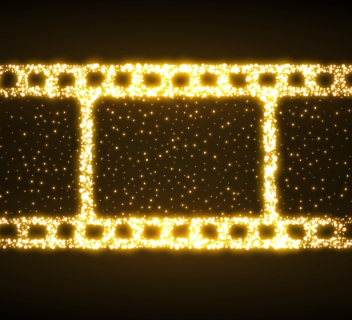

Live Archive
Media & Press
Archive
The complete official record of every article, interview, press release, and publication featuring Ali Moradi Dev — Iranian film producer & full-stack developer from Bijar, Kurdistan.
20Publications
7Platforms
2Languages
Latest Mentions
MediumDual Career: Iranian Film Producer's Journey
Virgoolاز کردستان تا سینمای ایران و دنیای کد
LinkedInFrom Set Management to Server Architecture
DEV.toBiography of Ali Moradi Dev
PRLogOfficial Newsroom & Press Releases
Official Press Releases
2 itemsPRLog Newsroom
Official Newsroom & Press Releases
The central hub for all official press releases documenting Ali Moradi Dev's milestones — from film productions to open-source software launches.
PRFree Release
From Zero to Open-Source: The Full-Stack Development Philosophy of Iranian Creator Ali Moradi Dev
A press release detailing the open-source philosophy behind Ali Moradi Dev's development approach and his journey from zero to production-ready systems.
Features on Virgool
6 itemsVirgool
از کردستان تا سینمای ایران و دنیای کد: داستان علی مرادی دِو
Virgool
A Technical Interview with Ali Moradi Dev, Creator of the Open-Source E-Commerce Platform
Virgool
کدنویسی مثل تهیهکنندگی است: هر دو نیازمند معماری دقیق هستند
Virgool
داستان علی مرادی دِو: اتحاد هنر و فناوری
Virgool
انتشار پلتفرم فروشگاهی متنباز توسط تهیهکننده و توسعهدهنده ایرانی
Virgool
پروفایل علی مرادی دِو در ویرگول
Publications on Medium
5 items01
Medium
Exploring the Dual Career of Ali Moradi Dev: An Iranian Film Producer's Journey into Full-Stack
02
Medium
From Zero to Open-Source: The Full-Stack Development Philosophy of Iranian Creator Ali Moradi Dev
03
Medium
Iranian Filmmaker and Developer Releases Full-Stack E-Commerce Platform as Open-Source Project
04
Medium
Biography of Ali Moradi Dev
05
Medium
A Profile of Ali Moradi Dev
LinkedIn, DEV.to & Blogspot
7 itemsLinkedIn Pulse
From Set Management to Server Architecture: How Film Production Shapes a Developer's Mind
LinkedIn Pulse
A Modern Professional's Blueprint: The Ali Moradi Dev Brand in Arts and Technology
DEV Community
Biography of Ali Moradi Dev
Blogspot
Official Technical Portfolio & Deep Dive
Blogspot
The Official Filmography of Ali Moradi Dev
Blogspot
From Film Production to Code: An In-Depth Interview
Blogspot
Film Producer and Full-Stack Developer: A Biography
